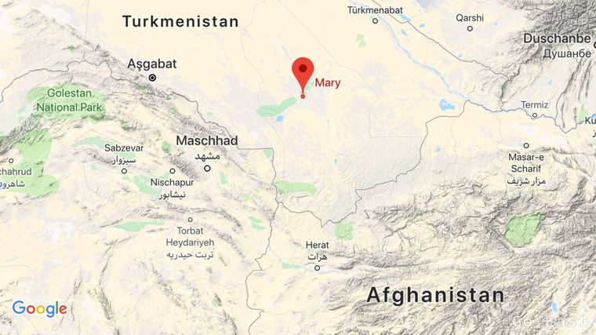
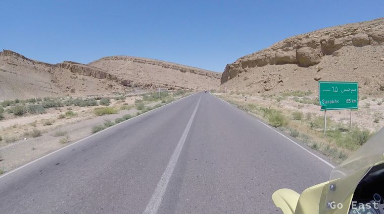
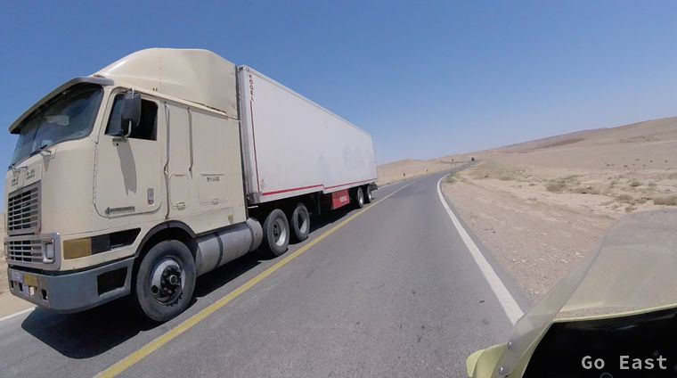
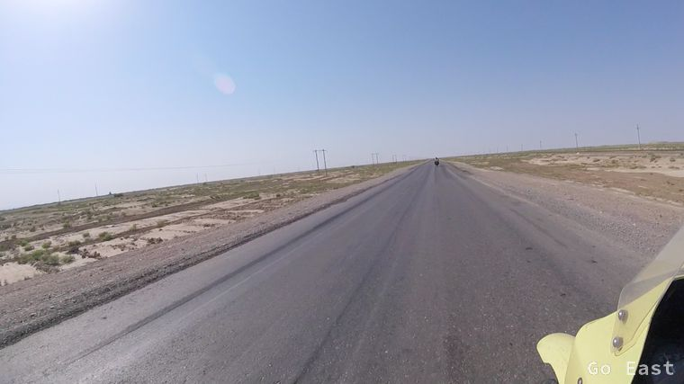
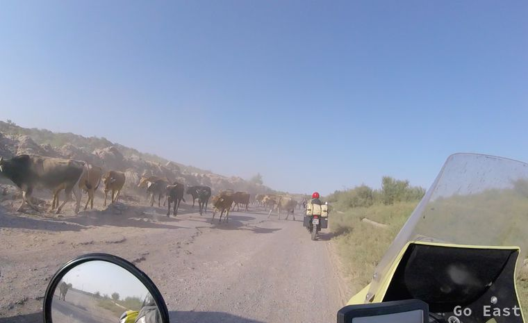
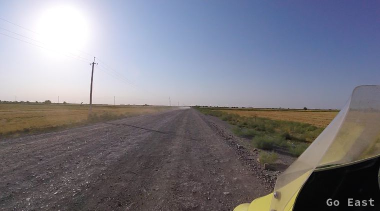
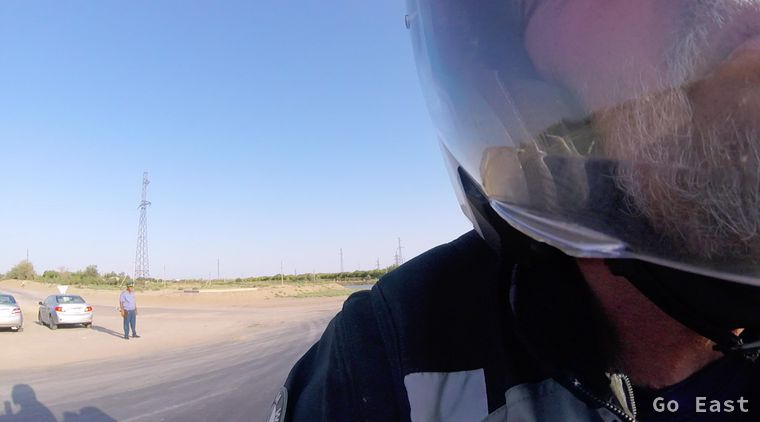
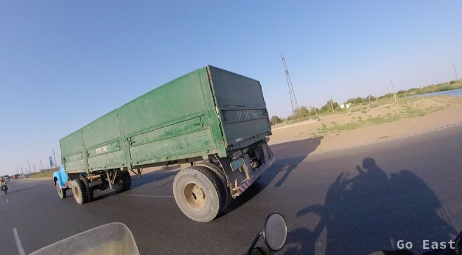
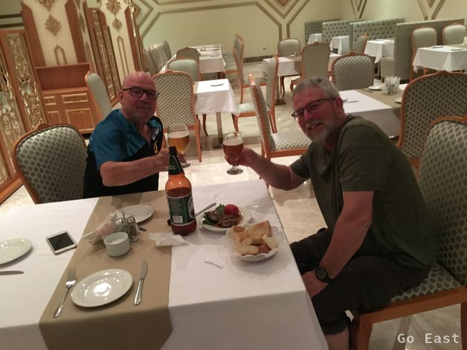

Vor dem Start prüfe ich den Ölstand. Alles ok.
Landschaft ist anfangs ziemlich eintönig. Nach dem letzten Gebirgszug nimmt die Wärme zu da wir ständig an Höhe verlieren. Vor der Grenze, trinken wir noch Tee und tanken auf. Grenzabfertigung an der iranischen Seite geht schnell und korrekt vonstatten. Mit Wehmut verlassen wir den Iran mit der Gewissheit eines Tages zurückzukehren. Ich spule die Eindrücke vom Iran nochmals ab und halte fest: Sehr freundliche Menschen und sehr viel gebildete Menschen, tolerante und rücksichtsvolle Autofahrer, Marmor, Hauben-Mercedes, viele Selfies mit uns und den Maschinen, Verkehrsüberwachung mit Kameras, viele nervige speed bumps, schmackhaftes 0% Bier, sehr eindrucksvolle Architektur bei Moscheen, super Hotels.

Auf dem Weg zur Grenze

Auf dem Weg zur Grenze
Wir fahren über die Brücke und sind in Turkmenistan und halten beim ersten turkmenischen Posten. Zwei Halbwüchsige in Uniform inspizieren unsere Pässe und wir werden weitergereicht.
Polizei, Zoll, Bank, Polizei. Prozessanalyse und -optimierung hätte hier Hochkonjunktur. Unsere Daten werden mehrfach handschriftlich erfasst, wobei der eine nicht lesen kann, was der vorherige geschrieben hat und deshalb nochmals nachfragen muss.
Am Ende des ganzen Prozesses sind wir 146,- USD los für phantasievolle Gebühren wie Benzin-Kompensationsgebühr und Versicherung über deren Haftung nichts ausgesagt wird, Bearbeitungsgebühr usw.
Wir werden auch noch gefragt, ob wir Geschenke aus Deutschland für die Beamten mitgebracht hätten. Wir können unser übriges Irangeld schwarz tauschen, was uns von den Grenzposten empfohlen wird, obwohl eigentlich illegal.
Wir bekommen GPS Geräte ausgehändigt, die wir die ganze Zeit mitführen müssen, so dass wir getrackt werden können und die vorgegebene Route nicht verlassen können. Elektronische Fußfesseln quasi.
Ich bin schon angefressen und schlage vor, den Aufenthalt hier auf das Minimum zu beschränken. Wir ziehen durch bis Mary, wobei hier auch noch Abkürzungen zu fahren sind ohne Asphalt, bis wir zur Hauptstrasse nach Mary kommen.

Auf dem Weg nach Mary

Auf dem Weg nach Mary

Auf dem Weg nach Mary

Auf dem Weg nach Mary

Auf dem Weg nach Mary
Die Strassen sind schlecht mit tiefen Fahrrinnen, obwohl ganz neue Streckenabschnitte vorhanden sind. Offensichlich fehlt der passende Schotterunterbau. Die Temperaturen sind permanent um die 45 Grad, da wir nun ständig auf ca. 200m ü. NN fahren. Wir sind in der Karakum Wüste. Turkmenistan besteht aus 90% Wüste.
Die Dörfer am Rande der Straße sehen triste aus. Die Menschen, die beim Straßenbau tätig oder in der Landwirtschaft beschäftigt sind tragen z. T. Gesichtsmasken, um sich vor der Sonne zu schützen.
Die Damenmode hat sich auch geändert. Keine schwarzen Tücher mehr, sondern z.T. einfarbige mit grellen Farben oder auch bunte figurbetonte knöchellange Kleider und bunte Kopftücher sind angesagt. Vereinzelt sehen wir Menschen mit asiatischen Gesichtszügen und lesen russisch klingende Namensschilder.
Auf den Straßen sehen wir jetzt vornehmlich japanische PKW und westeuropäische neue LKW und russische LKW.
Wir sehen Rinderherden mit richtigen Cowboys zu Pferde, vereinzelt Kamele (Dromedare) und abgemagerte verhärmte Hunde am Straßenrand. Wo künstlich bewässert wird, sehen wir Reis- und Baumwollfelder.
Wir finden 200km später das Hotel Mary in Mary, das ca. 90,- USD kostet und mit Visa bezahlt werden kann. Internet funktioniert nur formal in der Lobby und nicht im Zimmer aber auch dort nicht tatsächlich.
Mary bzw. das frühere Merw liegt auch an der Seidenstraße.
Alle sozialen Netze sollen gesperrt sein. Bei mir geht gar nichts. Die iranische Sim Karte funktioniert offensichtlich nur mit iranischem Provider, andere werden gar nicht erst erkannt. Also kann ich die jetzt auch wieder ausbauen. Die Zeit hat sich nun auch wieder um 0,5 Std verändert. Unterschied zu Deutschland nun 3 Std.
Das Restaurant ist quasi leer. Wir trinken Bier aus 1,5l Plastikflaschen, das mäßig schmeckt und ich esse ein hervorragend gewürztes Rinder(Schuhsohlen)steak, was meine Kaumuskulatur wieder richtig auf Trap bringt.
Mit Botschaftsangehörigen der polnischen Botschaft in Teheran, die es auch hierher verschlagen hat, trinken wir noch ein wenig, um die Stimmung aufzuhellen, was in Dollar Cash bezahlt werden muss. 50,- USD später, die Stimmung ist gelöst, wissen wir, dass wir das Land so schnell wie möglich verlassen werden.

Bier im Hotel Mary in Mary